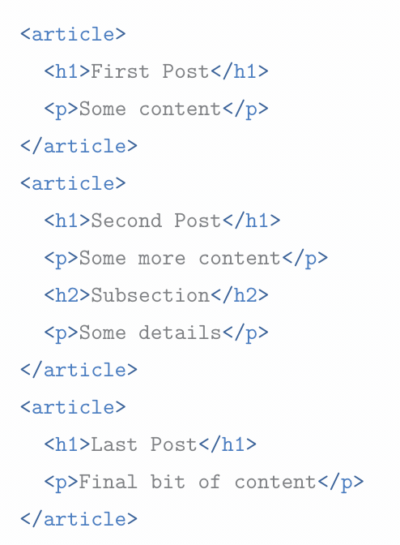
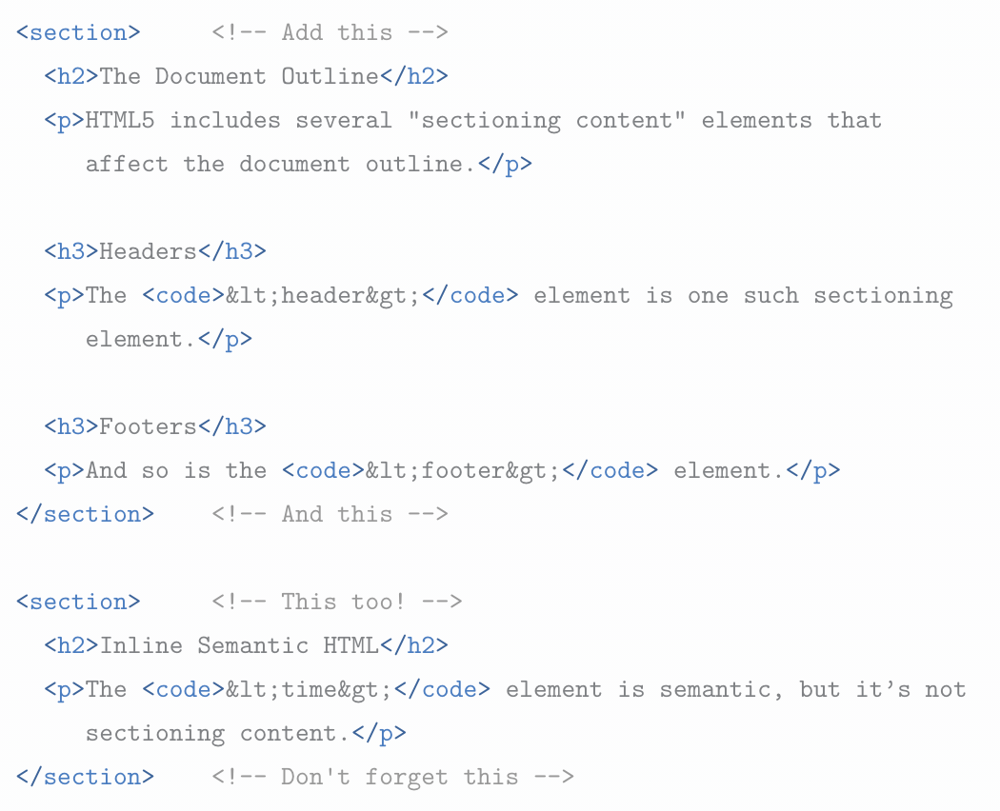
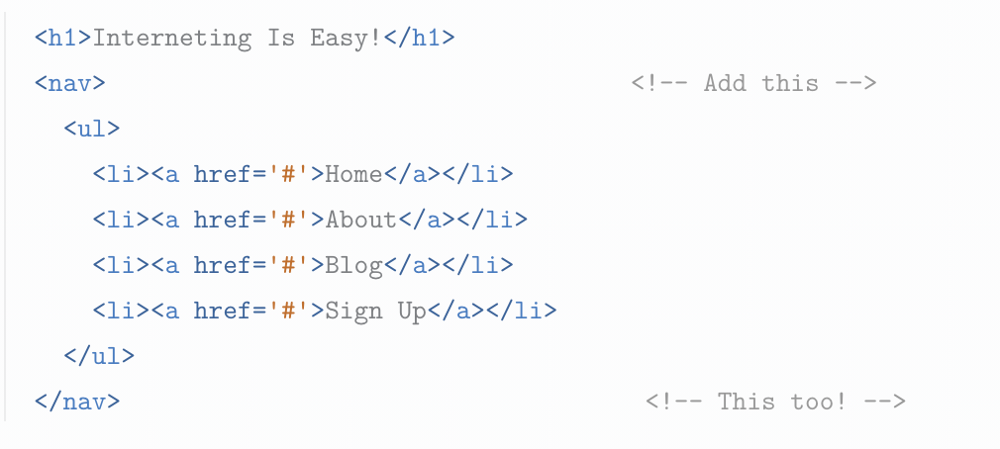
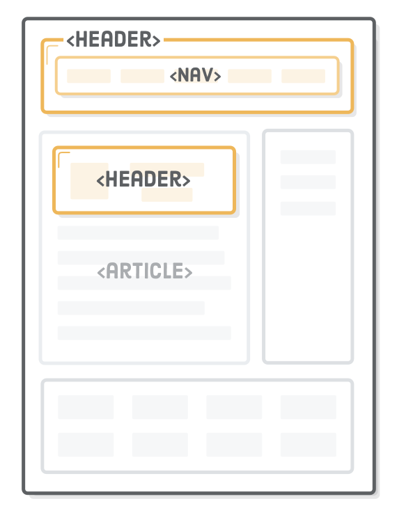
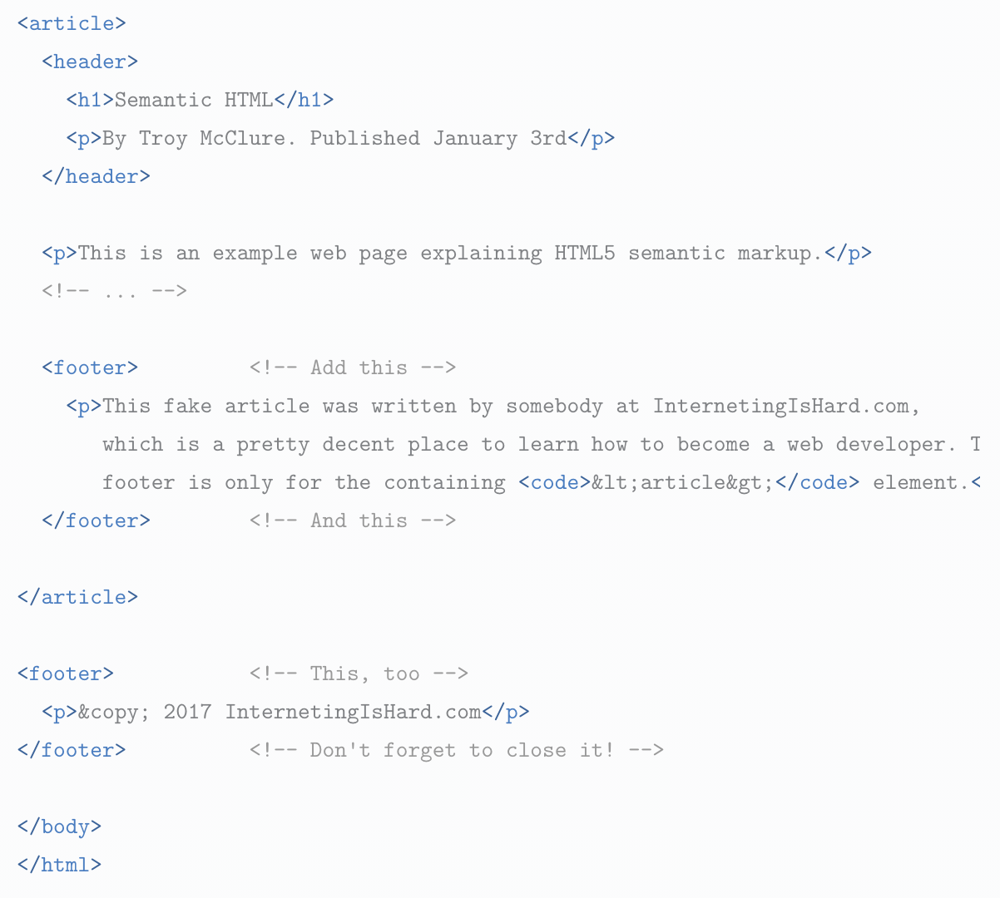
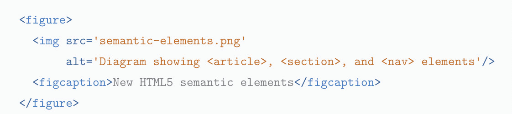

What is semantics?
Semantic HTML implies that the HTML markup you decide to use should help convey the underlying meaning of the content; and not use an element based solely on its appearance.
Semantic Elements
| Tag | Description | Example of tag use |
| <article> | An article tag is used around content that is self-contained. Could this whole piece be taken out of context and still make sense? If yes, use an article. |  |
| <section> | A section element is used to group togetehr thematically related content. |  |
| <nav> | A section of a page used to provide navigation links, either within the doc or to other documents. |  |
| <header> | A header is meant for for introductory content or a set of navigational links. |  |
| <footer> | Essentially, equal to headers but at the end of an article/website. |  |
| <aside> | Home to content that is tangentially related to the content around the element. |  |
| <figure> | Filled with self-contained content, potentially with an optional caption. Usually a figure is an image, illustration, diagram, code snippet, etc. that is referenced in the main flow of the doc but can be moved to another part of the document. |  |
| <figcaption> | A caption that relates to its parent figure. |